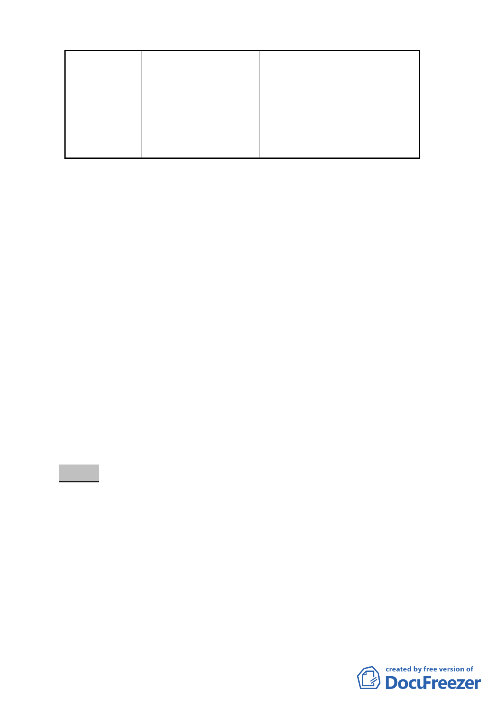

臺北市中正
區南海段五
小段 56-1、
57-1 及 462-2
地號等 3 筆土
地
道路用地
公園用地
478
計畫道路預定地位
於植物園現況範圍
內，屬園區不可分
割之部分，爰將道
路用地變更為公園
用地，以維持本市
植物園之完整。
（二） 土地使用分區管制：除本計畫書圖之規定外，應依「臺
北市土地使用分區管制規則」之規定辦理。
（三） 事業暨財務計畫：本計畫區內 3 筆土地之權屬為中華民
國，由行政院農業委員會林業試驗所管有，變更後續由
該所負責維護管理。
（四） 本計畫變更後，為因應東南側之東西向 8 公尺計畫道路
未來開闢後迴車空間需求，應於南側公園用地內配合檢
討留設。
五、法令依據：都市計畫法第 27 條第 1 項第 4 款及都市更新條例
第 6、8 條。
六、辦理機關：臺北市政府。
七、本案審議歷程：市府（都市發展局）於 98 年 6 月 11 日以府
都規字第 09832525203 號公告，98 年 6 月 12 日起公開展覽
30 天。
八、公民或團體所提意見：3 件。(詳後附公民或團體意見表)
決議：
一、 本變更道路用地為公園用地案照案通過。
二、 另有關公民或團體所提意見綜理表中對於本變更案東側住宅
區土地所有權人提出之權益補償建議方案，請市府發展局與
土地所有權人協商，並將結果提下次委員會議報告。
-7-